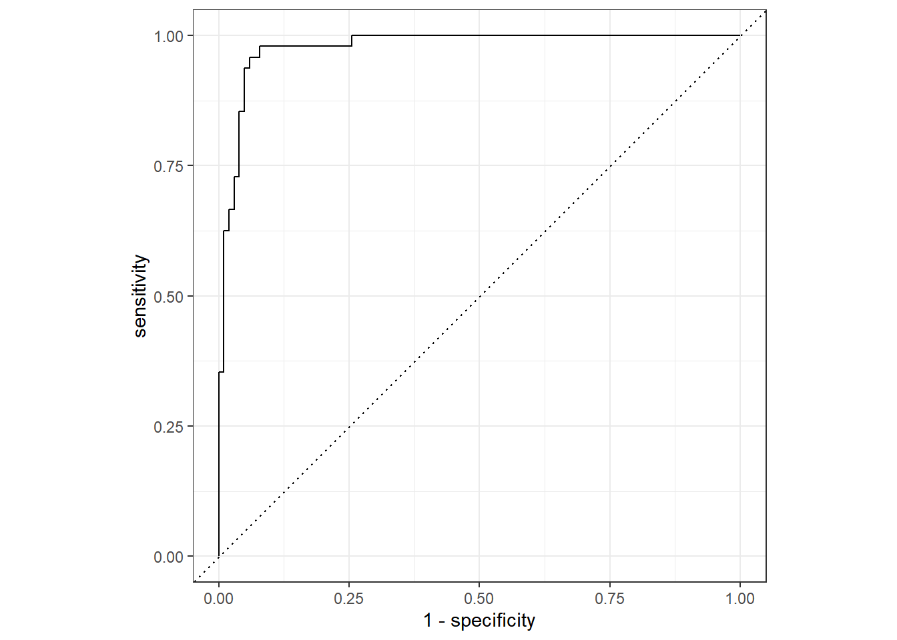

Chapter 5 Logistic Regression
5.1 Description
An approach for predicting a the probability that response value \(Y\) belongs to a particular category based on one or more predictor values \(X_1, X_2, ... X_n\). The probability will always lie between 0 (no chance) and 1 (absolute certainty) and can be given by the following logistic function for the case with a single predictor variable:
\[p(X) = \frac{e^{\beta_0 + \beta_1X}}{1 + e^{\beta_0 + \beta_1X}}\] where
\(p(X) = Pr(Y = category|X)\), which can be read as “the probability that \(Y\) is
category given \(X\).
Unlike a linear function, this logistic function will not indicate a probability of an observation belonging to a particular category as negative or greater than 1. Determining whether to treat a particular observation as belonging to a particular category can be made on the basis of the probability returned by this function. It may be reasonable to use a 50% threshold in many cases (\(p(X) > 0.5\)), but an analyst may want to be adjust this threshold to meet business needs. You may wish to raise the threshold to reduce false positive classifications or lower it to reduce false negative classifications.
5.2 How it Works
A careful observer may not some similarities in the exponents of the formula above and the linear formula discussed in previous chapters. A bit of manipulation yields:
\[\frac{p(X)}{1 - p(X)} = e^{\beta_0 + \beta_1X}\]
where the \(\frac{p(X)}{1 - p(X)}\) term is labeled as the odds of the event, such that an odds of \(1/4\) yields \(p(X) = 0.2\) and an odds of \(9\) yields \(p(X) = 0.9\). You can confirm this by noting that \(\frac{0.9}{1 - 0.9} = 9\). Taking the logarithm of both sides yields:
\[\ln{ \left( \frac{p(X)}{1 - p(X)} \right) } = \beta_0 + \beta_1X\]
The left-hand side of that equation is called the log odds or logit. Now, our equation looks eerily similar to the linear equation because, in fact, the relationship between “the log odds that the response falls into a certain category given \(X\)” and \(X\) is linear. That is, for one unit change in \(X\), the log odds that the response falls into the indicated category changes by a constant amount \(\beta_1\). This behavior can be extended to the case of multiple predictor variables in a manner analogous to what we have seen for Linear Regression:
\[\ln{ \left( \frac{p(X)}{1 - p(X)} \right) } = \beta_0 + \beta_1x_1 + \,... \, + \beta_px_p\]
This model can also be extended to the case where there are more than two response categories, known as a multinomial logistic regression model, like so (with a single predictor for simplicity):
\[\ln{ \left( \frac{Pr(Y=k|X)}{Pr(Y=K|X)} \right) } = \beta_0 + \beta_1X\] To do this,
given that there are \(K\) possible values for \(Y\), one possible \(K\) is chosen as the
default, or baseline value. Consider the example of a model to classify flower species
using the iris data set.
| Name | iris |
| Number of rows | 150 |
| Number of columns | 5 |
| _______________________ | |
| Column type frequency: | |
| factor | 1 |
| numeric | 4 |
| ________________________ | |
| Group variables | None |
Variable type: factor
| skim_variable | n_missing | complete_rate | ordered | n_unique | top_counts |
|---|---|---|---|---|---|
| Species | 0 | 1 | FALSE | 3 | set: 50, ver: 50, vir: 50 |
Variable type: numeric
| skim_variable | n_missing | complete_rate | mean | sd | p0 | p25 | p50 | p75 | p100 | hist |
|---|---|---|---|---|---|---|---|---|---|---|
| Sepal.Length | 0 | 1 | 5.84 | 0.83 | 4.3 | 5.1 | 5.80 | 6.4 | 7.9 | ▆▇▇▅▂ |
| Sepal.Width | 0 | 1 | 3.06 | 0.44 | 2.0 | 2.8 | 3.00 | 3.3 | 4.4 | ▁▆▇▂▁ |
| Petal.Length | 0 | 1 | 3.76 | 1.77 | 1.0 | 1.6 | 4.35 | 5.1 | 6.9 | ▇▁▆▇▂ |
| Petal.Width | 0 | 1 | 1.20 | 0.76 | 0.1 | 0.3 | 1.30 | 1.8 | 2.5 | ▇▁▇▅▃ |
If you are fitting a logistic regression to the iris data set to predict species, you
may set the baseline to be ‘virginica’. The choice of baseline is not important for
fitting the model, but it is important for interpreting the estimated \(\beta\)
coefficients, as \(Pr(Y = k|X)\) is read as the probability that \(Y\) is some value other
than the baseline \(k\) given \(X\) and \(Pr(Y=K|X)\) is the probability that \(Y\) is the
baseline value \(K\) given \(X\). In other works, the left-hand side is the _log odds of
\(k\) versus \(K\) given \(X\). This is an interesting point, but not entirely impactful, as
inferences or predictions based on this kind of model will be the same. Finally, this
expression can be extended to the case of multiple response and predictor variables like
so:
\[\ln{ \left( \frac{Pr(Y=k|X=x)}{Pr(Y=K|X=x)} \right) } = \beta_0 + \beta_1x_1 + \, ... \, + \beta_px_p\]
As an alternative to choosing a baseline category, the softmax coding of a logistic regression model treats all \(K\) classes symmetrically, such that the log odds ratio between one categorical value \(k\) and another \(k'\) can be represented as:
\[ ln{\left( \frac{Pr(Y=k|X=x}{Pr(Y=k'|X=x)} \right) = (\beta_{k0} - \beta_{k'0}) + (\beta_{k1} - \beta{k'1})x_1 + \, ... \, + (\beta_{kp} - \beta_{k'p})x_p} \]
Similarly to the linear case, the fit to a logistic model can be fit by an equation.
Instead of the least squares method, logistic models are fit by a maximum likelihood
method. In the simple case with one predictor and a binary response variable, the
_maximum likelihood function_ attempts to estimate \(\beta_0\) and \(\beta_1\) in such a
way that the predicted probability \(\hat{p}(x_i)\) matches the observed result as much as
possible. This means that, when \(Y\) == category \(\hat{p}(x_i)\) should be very close to
1 and when \(Y\) != category \(\hat{p}(x_i)\) should be very close to 0. This is
accomplished using a likelihood function of the form:
\[\ell(\beta_0, \beta_1) = \prod_{i:y_i = 1}{p(x_i)} \prod_{i':y_{i'}=0}{(1 - p(x_{i'}))}\]
5.3 Evaluating Validity
As can be seen from the underlying math, there are several assumptions inherent in a logistic regression model, regardless of the number of predictor variables or response categories:
Since the contribution by each set of predictors in each observation is calculated independently for each response, it is assume that each observation is independent.
Each predictor variable is assumed to be independent as well, that is, there is no collinearity between predictors. This can be detected through exploratory visualization using a scatterplot matrix or by calculating variance inflation factors via
car::vifor other methods.Just as with linear regression models, the goodness-of-fit can be negatively impacted by outliers or high-leverage points.
Finally, as has been demonstrated, logistic regression assumes a linear relationship between the log odds of the response belonging to a given category and the predictor variables. This can be a bit more complicated to assess than in the linear case, but a Box-Tidwell test (
car::boxTidwell) or scatter plot can help. These methods are demonstrated in the Example.
5.4 Evaluating Fit
5.4.1 Binomial Logistic Regression
There are a variety of methods for evaluating the fit of a logistic regression. Unlike a
linear regression on a quantitative response, the ultimate output of a classification
model (such as a logistic regression) cannot be easily characterized by how close the
individual predicted response is to an observed response, in general, because the
response either is or is not classified correctly. Instead, population-wide measures
such as a confusion matrix5 can be used. Here’s what that looks like for a binomial
logistic regression on the iris data set, determining whether a particular flower is
of the setosa species.
set.seed(6047)
# I'm going to start by switching around the classes on a few of the
# observations, just to make the confusion matrix more interesting.
# Otherwise, our classifier will be _too_ good.
(iris_data
<- iris
|> mutate(
replace = sample(Species, n()),
Species = if_else(runif(n(), 0, 1) > .15, Species, replace),
setosa = factor(Species == "setosa", levels = c("TRUE", "FALSE")),
)
|> select(Species, setosa, matches("(Length|Width)$")))## Species setosa Sepal.Length Sepal.Width Petal.Length Petal.Width
## 1 setosa TRUE 5.1 3.5 1.4 0.2
## 2 setosa TRUE 4.9 3.0 1.4 0.2
## 3 setosa TRUE 4.7 3.2 1.3 0.2
## 4 setosa TRUE 4.6 3.1 1.5 0.2
## 5 setosa TRUE 5.0 3.6 1.4 0.2
## 6 setosa TRUE 5.4 3.9 1.7 0.4
## 7 setosa TRUE 4.6 3.4 1.4 0.3
## 8 setosa TRUE 5.0 3.4 1.5 0.2
## 9 setosa TRUE 4.4 2.9 1.4 0.2
## 10 setosa TRUE 4.9 3.1 1.5 0.1
## 11 setosa TRUE 5.4 3.7 1.5 0.2
## 12 setosa TRUE 4.8 3.4 1.6 0.2
## 13 setosa TRUE 4.8 3.0 1.4 0.1
## 14 setosa TRUE 4.3 3.0 1.1 0.1
## 15 setosa TRUE 5.8 4.0 1.2 0.2
## 16 setosa TRUE 5.7 4.4 1.5 0.4
## 17 setosa TRUE 5.4 3.9 1.3 0.4
## 18 setosa TRUE 5.1 3.5 1.4 0.3
## 19 setosa TRUE 5.7 3.8 1.7 0.3
## 20 setosa TRUE 5.1 3.8 1.5 0.3
## 21 versicolor FALSE 5.4 3.4 1.7 0.2
## 22 setosa TRUE 5.1 3.7 1.5 0.4
## 23 setosa TRUE 4.6 3.6 1.0 0.2
## 24 setosa TRUE 5.1 3.3 1.7 0.5
## 25 setosa TRUE 4.8 3.4 1.9 0.2
## 26 setosa TRUE 5.0 3.0 1.6 0.2
## 27 versicolor FALSE 5.0 3.4 1.6 0.4
## 28 setosa TRUE 5.2 3.5 1.5 0.2
## 29 setosa TRUE 5.2 3.4 1.4 0.2
## 30 virginica FALSE 4.7 3.2 1.6 0.2
## 31 setosa TRUE 4.8 3.1 1.6 0.2
## 32 setosa TRUE 5.4 3.4 1.5 0.4
## 33 setosa TRUE 5.2 4.1 1.5 0.1
## 34 setosa TRUE 5.5 4.2 1.4 0.2
## 35 versicolor FALSE 4.9 3.1 1.5 0.2
## 36 setosa TRUE 5.0 3.2 1.2 0.2
## 37 virginica FALSE 5.5 3.5 1.3 0.2
## 38 setosa TRUE 4.9 3.6 1.4 0.1
## 39 setosa TRUE 4.4 3.0 1.3 0.2
## 40 setosa TRUE 5.1 3.4 1.5 0.2
## 41 setosa TRUE 5.0 3.5 1.3 0.3
## 42 setosa TRUE 4.5 2.3 1.3 0.3
## 43 setosa TRUE 4.4 3.2 1.3 0.2
## 44 setosa TRUE 5.0 3.5 1.6 0.6
## 45 setosa TRUE 5.1 3.8 1.9 0.4
## 46 setosa TRUE 4.8 3.0 1.4 0.3
## 47 setosa TRUE 5.1 3.8 1.6 0.2
## 48 setosa TRUE 4.6 3.2 1.4 0.2
## 49 setosa TRUE 5.3 3.7 1.5 0.2
## 50 setosa TRUE 5.0 3.3 1.4 0.2
## 51 versicolor FALSE 7.0 3.2 4.7 1.4
## 52 versicolor FALSE 6.4 3.2 4.5 1.5
## 53 versicolor FALSE 6.9 3.1 4.9 1.5
## 54 versicolor FALSE 5.5 2.3 4.0 1.3
## 55 versicolor FALSE 6.5 2.8 4.6 1.5
## 56 virginica FALSE 5.7 2.8 4.5 1.3
## 57 versicolor FALSE 6.3 3.3 4.7 1.6
## 58 versicolor FALSE 4.9 2.4 3.3 1.0
## 59 versicolor FALSE 6.6 2.9 4.6 1.3
## 60 versicolor FALSE 5.2 2.7 3.9 1.4
## 61 versicolor FALSE 5.0 2.0 3.5 1.0
## 62 versicolor FALSE 5.9 3.0 4.2 1.5
## 63 virginica FALSE 6.0 2.2 4.0 1.0
## 64 versicolor FALSE 6.1 2.9 4.7 1.4
## 65 versicolor FALSE 5.6 2.9 3.6 1.3
## 66 versicolor FALSE 6.7 3.1 4.4 1.4
## 67 versicolor FALSE 5.6 3.0 4.5 1.5
## 68 versicolor FALSE 5.8 2.7 4.1 1.0
## 69 versicolor FALSE 6.2 2.2 4.5 1.5
## 70 versicolor FALSE 5.6 2.5 3.9 1.1
## 71 versicolor FALSE 5.9 3.2 4.8 1.8
## 72 versicolor FALSE 6.1 2.8 4.0 1.3
## 73 versicolor FALSE 6.3 2.5 4.9 1.5
## 74 versicolor FALSE 6.1 2.8 4.7 1.2
## 75 versicolor FALSE 6.4 2.9 4.3 1.3
## 76 versicolor FALSE 6.6 3.0 4.4 1.4
## 77 versicolor FALSE 6.8 2.8 4.8 1.4
## 78 versicolor FALSE 6.7 3.0 5.0 1.7
## 79 versicolor FALSE 6.0 2.9 4.5 1.5
## 80 versicolor FALSE 5.7 2.6 3.5 1.0
## 81 versicolor FALSE 5.5 2.4 3.8 1.1
## 82 versicolor FALSE 5.5 2.4 3.7 1.0
## 83 versicolor FALSE 5.8 2.7 3.9 1.2
## 84 versicolor FALSE 6.0 2.7 5.1 1.6
## 85 versicolor FALSE 5.4 3.0 4.5 1.5
## 86 versicolor FALSE 6.0 3.4 4.5 1.6
## 87 versicolor FALSE 6.7 3.1 4.7 1.5
## 88 versicolor FALSE 6.3 2.3 4.4 1.3
## 89 versicolor FALSE 5.6 3.0 4.1 1.3
## 90 versicolor FALSE 5.5 2.5 4.0 1.3
## 91 versicolor FALSE 5.5 2.6 4.4 1.2
## 92 versicolor FALSE 6.1 3.0 4.6 1.4
## 93 versicolor FALSE 5.8 2.6 4.0 1.2
## 94 versicolor FALSE 5.0 2.3 3.3 1.0
## 95 versicolor FALSE 5.6 2.7 4.2 1.3
## 96 versicolor FALSE 5.7 3.0 4.2 1.2
## 97 versicolor FALSE 5.7 2.9 4.2 1.3
## 98 virginica FALSE 6.2 2.9 4.3 1.3
## 99 versicolor FALSE 5.1 2.5 3.0 1.1
## 100 versicolor FALSE 5.7 2.8 4.1 1.3
## 101 virginica FALSE 6.3 3.3 6.0 2.5
## 102 virginica FALSE 5.8 2.7 5.1 1.9
## 103 virginica FALSE 7.1 3.0 5.9 2.1
## 104 virginica FALSE 6.3 2.9 5.6 1.8
## 105 virginica FALSE 6.5 3.0 5.8 2.2
## 106 virginica FALSE 7.6 3.0 6.6 2.1
## 107 setosa TRUE 4.9 2.5 4.5 1.7
## 108 virginica FALSE 7.3 2.9 6.3 1.8
## 109 virginica FALSE 6.7 2.5 5.8 1.8
## 110 virginica FALSE 7.2 3.6 6.1 2.5
## 111 versicolor FALSE 6.5 3.2 5.1 2.0
## 112 virginica FALSE 6.4 2.7 5.3 1.9
## 113 virginica FALSE 6.8 3.0 5.5 2.1
## 114 virginica FALSE 5.7 2.5 5.0 2.0
## 115 virginica FALSE 5.8 2.8 5.1 2.4
## 116 virginica FALSE 6.4 3.2 5.3 2.3
## 117 virginica FALSE 6.5 3.0 5.5 1.8
## 118 setosa TRUE 7.7 3.8 6.7 2.2
## 119 setosa TRUE 7.7 2.6 6.9 2.3
## 120 virginica FALSE 6.0 2.2 5.0 1.5
## 121 virginica FALSE 6.9 3.2 5.7 2.3
## 122 virginica FALSE 5.6 2.8 4.9 2.0
## 123 virginica FALSE 7.7 2.8 6.7 2.0
## 124 virginica FALSE 6.3 2.7 4.9 1.8
## 125 virginica FALSE 6.7 3.3 5.7 2.1
## 126 virginica FALSE 7.2 3.2 6.0 1.8
## 127 virginica FALSE 6.2 2.8 4.8 1.8
## 128 virginica FALSE 6.1 3.0 4.9 1.8
## 129 virginica FALSE 6.4 2.8 5.6 2.1
## 130 virginica FALSE 7.2 3.0 5.8 1.6
## 131 virginica FALSE 7.4 2.8 6.1 1.9
## 132 virginica FALSE 7.9 3.8 6.4 2.0
## 133 virginica FALSE 6.4 2.8 5.6 2.2
## 134 virginica FALSE 6.3 2.8 5.1 1.5
## 135 virginica FALSE 6.1 2.6 5.6 1.4
## 136 virginica FALSE 7.7 3.0 6.1 2.3
## 137 virginica FALSE 6.3 3.4 5.6 2.4
## 138 virginica FALSE 6.4 3.1 5.5 1.8
## 139 virginica FALSE 6.0 3.0 4.8 1.8
## 140 virginica FALSE 6.9 3.1 5.4 2.1
## 141 virginica FALSE 6.7 3.1 5.6 2.4
## 142 virginica FALSE 6.9 3.1 5.1 2.3
## 143 virginica FALSE 5.8 2.7 5.1 1.9
## 144 virginica FALSE 6.8 3.2 5.9 2.3
## 145 virginica FALSE 6.7 3.3 5.7 2.5
## 146 virginica FALSE 6.7 3.0 5.2 2.3
## 147 virginica FALSE 6.3 2.5 5.0 1.9
## 148 versicolor FALSE 6.5 3.0 5.2 2.0
## 149 virginica FALSE 6.2 3.4 5.4 2.3
## 150 virginica FALSE 5.9 3.0 5.1 1.8# This recipe assumes that `Species` is predicted by all other values,
# creates interaction terms, and normalizes all the numeric predictors.
(iris_recipe
<- recipe(setosa ~ ., data = iris_data)
|> step_rm(Species) # no cheating!
|> step_interact(setosa ~ Sepal.Length:Sepal.Width)
|> step_interact(setosa ~ Petal.Length:Petal.Width)
|> step_normalize(all_numeric_predictors()))## Recipe
##
## Inputs:
##
## role #variables
## outcome 1
## predictor 5
##
## Operations:
##
## Variables removed Species
## Interactions with setosa, Sepal.Length:Sepal.Width
## Interactions with setosa, Petal.Length:Petal.Width
## Centering and scaling for all_numeric_predictors()# Specify the model
(iris_model
<- logistic_reg()
|> set_engine("glm")
|> set_mode("classification"))## Logistic Regression Model Specification (classification)
##
## Computational engine: glm# Bundle into a workflow (with fit)
(iris_workflow
<- workflow()
|> add_recipe(iris_recipe)
|> add_model(iris_model)
|> fit(data = iris_data))## ══ Workflow [trained] ══════════════════════════════════════════════════════════════════════════════
## Preprocessor: Recipe
## Model: logistic_reg()
##
## ── Preprocessor ────────────────────────────────────────────────────────────────────────────────────
## 4 Recipe Steps
##
## • step_rm()
## • step_interact()
## • step_interact()
## • step_normalize()
##
## ── Model ───────────────────────────────────────────────────────────────────────────────────────────
##
## Call: stats::glm(formula = ..y ~ ., family = stats::binomial, data = data)
##
## Coefficients:
## (Intercept) Sepal.Length Sepal.Width
## 1.9093 1.8128 -0.5969
## Petal.Length Petal.Width Sepal.Length_x_Sepal.Width
## 2.4619 7.7695 -0.2847
## Petal.Length_x_Petal.Width
## -9.3748
##
## Degrees of Freedom: 149 Total (i.e. Null); 143 Residual
## Null Deviance: 188.1
## Residual Deviance: 51.93 AIC: 65.93# Add predictions to the input data
iris_predictions <- augment(iris_workflow, iris_data)
# Create a confusion matrix (table)
(confusion_matrix
<- iris_predictions
|> count(setosa, .pred_class)
|> pivot_wider(names_from = .pred_class, values_from = n))## # A tibble: 2 × 3
## setosa `TRUE` `FALSE`
## <fct> <int> <int>
## 1 TRUE 45 3
## 2 FALSE 5 97In this binary case, the results can be classified in four different ways:
A true positive [\(TP\)] is a case where the observed value is ‘true’ and the predicted value is ‘true’.
A true negative [\(TN\)] is a case where the observed value is ‘false’ and the predicted value is ‘false’.
A false positive [\(FP\)] is a case where the observed value is ‘false’ and the predicted value is ‘true’.
A false negative [\(FN\)] is a case where the observed value is ‘true’ and the predicted value is ‘false’.
The counts of observations in these four ‘buckets’ can be used to calculate a variety of useful measures:
Precision [\(TP/(TP + FP)\)] is defined as the proportion of predicted positives that are actually positive. Also called positive predictive value. Answers the question: “Of all the flowers the model predicted to be setosa, what fraction actually were?”
Recall [\(TP/(TP + FN)\)] is defined as the proportion of positive results out of the number of samples which were actually positive. Also called sensitivity. Answers the question: “Of all the flowers that are actually setosa, what fraction did the model identify?”
Specificity [\(TN/(TN + FP)\)] is defined as the proportion of negative results out of the number of samples which were actually negative. Answers the question: “Of all flowers that were not setosa, what fraction did the model identify?”
Accuracy [\((TP + TN)/(TP + TN + FP + FN)\)] is the percentage of labels predicted accurately for a sample. Answers the question: “Of all the observations, what fraction were correctly classified?”
F Measure is a weighted average of the precision and recall, with best 1 and worst being 0.
Cohen’s Kappa has other uses, but when determining the performance of a classification model it provides an estimate of how much better the observed accuracy (calculated as shown above) is than the expected accuracy. For example, if the expected accuracy is 50% (random chance) and the observed accuracy is 95%, \(\kappa\) will be 0.90. This is especially useful when the class distribution is skewed. Kappa can be calculated as shown:
\[\begin{align} observations &= n = TP + TN + FP + FN \\ accuracy_{obs} &= \frac{TP + TN}{n}\\ accuracy_{exp} &= \left(\frac{TP * FP}{obs} + \frac{TN * FN}{obs}\right) \div n\\ \kappa &= \frac{accuracy_{obs} - accuracy{exp}}{1 - accuracy_{exp}} \end{align}\]
As described in How it Works, a logistic regression model doesn’t exactly predict the class of each observation, but a set of probabilities that the observation belongs to each class. In the binary case, these are the probability that the observed class is ‘true’ ($p(X)$) and the probability that it is ‘false’ ($1 - p(X)$). By default, if \(p(X) > 0.5\), then the predicted class will be ‘true’. This threshold can be manipulated in order to further evaluate the model fit. By plotting the sensitivity against [1 - specificity] for a range of threshold values, you get a received operator characteristic (ROC) chart:
(iris_predictions
|> roc_curve(truth = setosa, .pred_TRUE)
|> autoplot())
The dotted diagonal line represents the probability of randomly guessing the correct class, so you want to be as far from that line as possible! For a theoretical model making perfect predictions, the curve would rise straight up the left side then across the top. The area under the curve (AUC) is a value between 0 and 1 that provides a quantitative measurement of the performance indicated by the ROC curve. The closer this value is to 1, the better the model has performed.
# Define a set of metrics using the `yardstick` package
eval_metrics <- metric_set(ppv, recall, specificity, accuracy,
f_meas, kap, roc_auc)
eval_metrics(
data = iris_predictions,
truth = setosa,
estimate = .pred_class,
.pred_TRUE # to be passed to `roc_auc()`
)## # A tibble: 7 × 3
## .metric .estimator .estimate
## <chr> <chr> <dbl>
## 1 ppv binary 0.9
## 2 recall binary 0.938
## 3 specificity binary 0.951
## 4 accuracy binary 0.947
## 5 f_meas binary 0.918
## 6 kap binary 0.879
## 7 roc_auc binary 0.9785.4.2 Multinomial Logistic Regression
When expanding our predictive value to predicting all classes of iris species:
Here we see that our relatively “un-tuned” model does a good job of identifying setosa species but struggles a bit more with versicolor and virginica (due in large part to our ‘tweaks’ to the data set). Each row represents the true class of the flower while each column represents the predicted class of each flower. In a perfect world, we would only have numbers on the diagonal. We can examine the same metrics as we did in the binomial case:
eval_metrics <- metric_set(ppv, recall, specificity, accuracy,
f_meas, kap, roc_auc)
eval_metrics(
data = iris_predictions,
truth = Species,
estimate = .pred_class,
.pred_setosa, # to be passed to `roc_auc()`
.pred_versicolor, # / /
.pred_virginica # /
)## # A tibble: 7 × 3
## .metric .estimator .estimate
## <chr> <chr> <dbl>
## 1 ppv macro 0.922
## 2 recall macro 0.921
## 3 specificity macro 0.960
## 4 accuracy multiclass 0.92
## 5 f_meas macro 0.921
## 6 kap multiclass 0.880
## 7 roc_auc hand_till 0.986